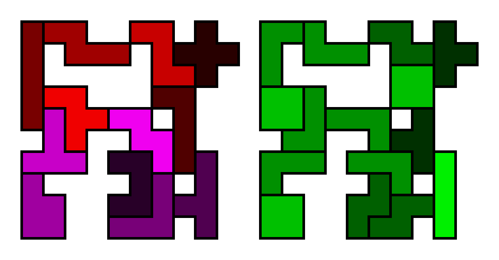

Nagoya University Polyomino World
Table of Contents

Common Multiple Shape Puzzle
Common Multiple Shape Puzzle is defined as the task of finding, for given finite sets S1, S2, …, Sn of polyominoes, a common shape that can be tiled by S1, S2, …, Sn, respectively. For each set Si, multiple copies of polyominoes can be used.
New Results
Solutions
Reference
Banbara, M., Minato, S., Ono, H., Uehara, R.: On the Computational Complexity of Generalized Common Shape Puzzles. Proceedings of the Forty-ninth International Conference on Current Trends in Theory and Practice of Computer Science (SOFSEM'24). Lecture Notes in Computer Science, vol. 14519, pp. 55-68. Springer (2024)
Contact
Mutsunori Banbara Professor Nagoya University Graduate School of Informatics Furo-cho, Chikusa-ward, Nagoya-city, 464-8601